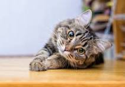

The width & height attributes can modify width & height of the imagemax-width is max width for image, min-width is minimum width, same for max-height & min-height
object-fit sets how the content of an image should be resized to fit its container, here, the image is xxx. object-position sets the image's position in the container
border is border (its red here), and border-radius makes the corners round
opacity specifies the opacity/transparency of the image here
filter:blur blurs the image by the amount you specify
filter:brightness changes brightness of image by specified amountfilter:contrast changes contrast by specified amountfilter:grayscale makes the image in black & white by specified amountfilter:invert inverts the colors of the imagefilter:sepia makes the image sepia by the specified amountz-index: specifies the stack order (whether the image should be infront or behind other elements)